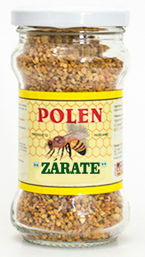

POLEN

El polen de abeja es el polvo que las abejas recogen de las flores y transportan en sus patas
de vuelta a la colmena para alimentar a la colonia.
Las proteínas, las hormonas y las vitaminas que contiene hacen que sea una alternativa muy
indicada para preservar el sistema inmune durante los cambios de estación.
El polen de abeja calma los episodios de estrés, ansiedad, nerviosismo y depresión haciendo
que nuestro estado de ánimo se mantenga en calma y lejos de la irritabilidad y la tristeza
que pueden causar estos cuadros. Además, estimula la mente mejorando nuestra capacidad intelectual.
Presentación: 125 kg
Composición: Polen puro
Beneficios: Ejerce acción anti anémica
Consumo: Diario
Producción: 10 Kg/ Mes